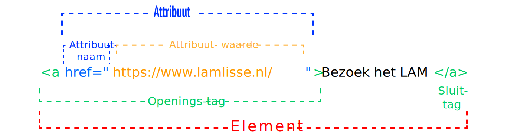
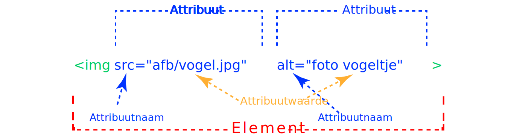

Attributen HTML5 en intro CSS
Meer mogelijkheden met elementen
Laat elementen zich onderscheiden
Inhoudsopgave


Leerdoelen
- Weten wat attributen en attribuut-waarden zijn
- a-element met attribuut
- img-element met attribuut
- input-elementen met attributen kennen
- Weten wat de basisstructuur van CSS is
- Koppelen van CSS
attribuut van een game-character
Een attribuut geeft het element iets extra's

een attribuut van een HTML-element
Een attribuut geeft het element iets extra's

merk op:
- dat je hier het hele element ziet
- attribuut alleen in de openingstag aanwezig is
- de spatie in de openingstag en NIET bij het = -teken
- het = teken en de dubbele aanhalingstekens " en "
- het attribuut heeft een attribuut naam (hier is dat class) en een attribuut-waarde
Het a-element
geeft een link naar een ander html-document
of een plek in een html-document
De mark-up van een a-element
href is een onmisbaar attribuut van a
<!DOCTYPE html>
<html>
<head>
<meta charset="UTF-8">
<title>Een link naar het LAM</title>
</head>
<body>
<h1>Een link naar het LAM</h1>
<p>Een link naar
<a href="https://www.lamlisse.nl/">de website van het LAM</a>
te Lisse.</p>
</body>
</html>
De betekenis van HTML
Hyper
Text hyper-text is klikbare tekst, die andere informatie ontvouwt
Mark-up opmaak
Language taal
Het img-element
Levert een afbeelding in het document
En heeft 2 onmisbare attributen
het img-element heeft minimaal de volgende attributen:
srcgeeft de plaats weer waar de afbeelding is opgeslagen-
altGeeft de omschrijving van de afbeelding weer
Alle andere attributen van img vind je bij w3schools.com
De mark-up van een img-element
href is een onmisbaar attribuut van a
<!DOCTYPE html>
<html>
<head>
<meta charset="UTF-8">
<title>Een link naar het LAM</title>
</head>
<body>
<p>Dit doen onze Kijkcoaches tijdens de lockdown</p>
<img src="https://www.lamlisse.nl/wp-content/uploads/2020/03/200220-LAM-Ron-van-der-Ende-Corine-Zijerveld-Fotografiec2020-155-scaled.jpg" alt="Onze Kijkcoaches" width="500">
</body>
</html>
Het input element tekst
met label element
<label>naam:
<input type="text" value="" placeholder="Voor- en achternaam">
</label>
Het resultaat
Het input element email
met label element
<label>email:
<input type="email" value=""
placeholder="Emailadres">
</label>
Het resultaat
Het input element radio
met label element
...
<p>Hoe vaak heeft u het LAM bezocht?</p>
<label><input type="radio" name="aantal" value="0"> Nog nooit</label> <br>
<label><input type="radio" name="aantal" value="1"> Een keer </label> <br>
<label><input type="radio" name="aantal" value="meer dan 2"> Meer dan 2 keer </label> <br>
<label><input type="radio" name="aantal" value="Meer dan 5 keer"> Meer dan 5 keer </label>
...
Het resultaat
Hoe vaak heeft u het LAM bezocht?
Merk op:
- Alle radio-input-elementen hebben dezelfde waarde voor
name-attribuut - Hierdoor kan er maar 1 item geselecteerd worden
- Een radio-input-element komt nooit in zijn eentje voor: er moet iets de selecteren zijn.
Het input-element checkbox
met label element
...
<label>
<input type="checkbox" value="donateur">
Ik wil donateur worden
</label> <br>
<label>
<input type="checkbox" value="nieuwsbrief" checked>
Ik wil de nieuwsbrief van het LAM ontvangen
</label>
...
Het resultaat
Merk op:
- Alle checkbox-input-elementen hoeven geen
name-attribuut te hebben.
Het komt wel vaak voor bij de verwerking in het PHP-script. - Er kunnen meerdere opties aangevinkt worden
- Er is ook een attribuut
checkedzonder waarde
basisstructuur CSS
Structuur
selector {
eigenschap: waarde;
...
}
...
Voorbeeld
body {
font-family: sans-serif;
background-color: beige;
}
h1 {
color: #f00;
}
3 manieren om CSS aan HTML-elementen te koppelen
- De efficiëntste: een apart CSS-document koppelen in het
head-element met hetlinkelement:
<link rel="stylesheet" href="css/webslides.css">
Je kunt zo meerdere pagina's aan één stijlblad koppelen: eenvoudig in het onderhoud! - De CSS stoppen in het
style-element in hethead-element - In een HTML-element een
style-attribuut toevoegen en de CSS-eigenschappen en hun waarden toevoegen.
CSS: Cascading Style Sheets
- De CSS-eigenschappen van een element neemt hij voor veel eigenschappen over van zijn parent. (overerving)
- De eigenschappen van het externe stijlblad kun je overschrijven in het interne stijlblad in de
headvan je document. - De stijlen van een element kun je overschrijven in het stijl-attribuut van dat element.
referenties
Opdracht
- Ga naar https://whichmuseum.nl/nederland/beste-musea en zoek daar een musem uit. Overleg dit met de docent, zodat je niet eenzelfde site kiest als een medestudent;
- Je gaat een websitje maken en dus maak je daarvoor een mapje aan naast de map van vorige week;
- Maak daarin een document met de naam index.html dit is van een site de pagina die automatisch geladen wordt;
- Zet de naam van het museum in het h1-element;
- Maak een lijstje van kenmerken van het museum op de pagina;
- Voeg een link naar de site van het museum toe;
- Voeg een afbeelding toe van het museum. Als deze te groot is, ga je dat verderop met CSS verkleinen;
- Zorg ervoor dat een klik op de afbeelding, ook naar de website van het museum gaat;
- Voeg een beschrijving toe van het museum;
- Maak een apart CSS-dcument aan en koppel deze aan index.html;
- Geef het
imgelement een CSS-eigenschapmax-widthmet de waarde van100%mee - Ga naar de font-informatie van W3 Schools en maak het lettertype van het document schreefloos;
- Bekijk CSS kleuren CSS achtergrond van W3 Schools om de achtergrondkleur en de kleur van het document aan te passen;
- Voorzie het
h1-element weer van een schreefletter en geef deze een andere achtergrond- en letterkleur; - Zet deze oefening online;
- Zet deze oefening ook op GitHub met een link naar de live-versie in het README.md bestand;
- Lever de link van de GitHub in.